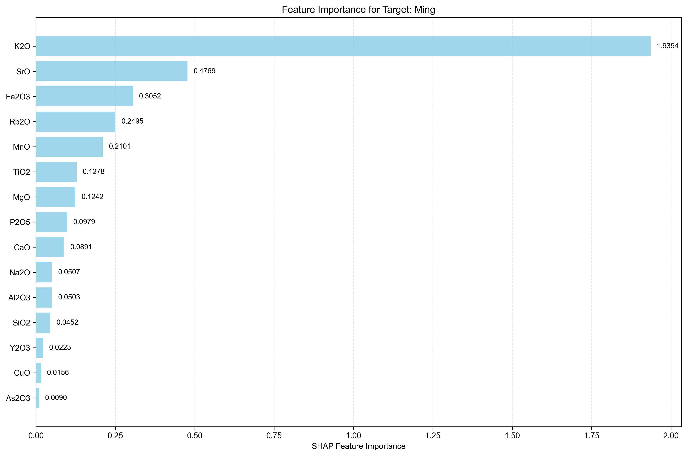
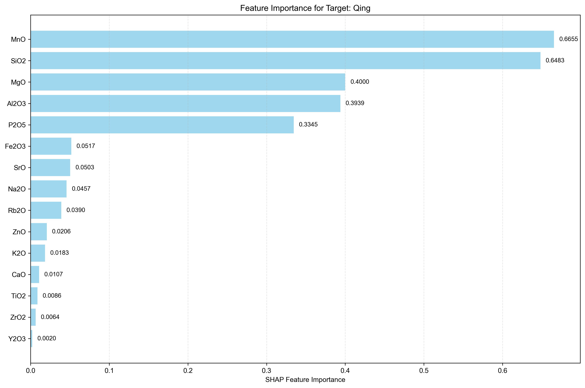
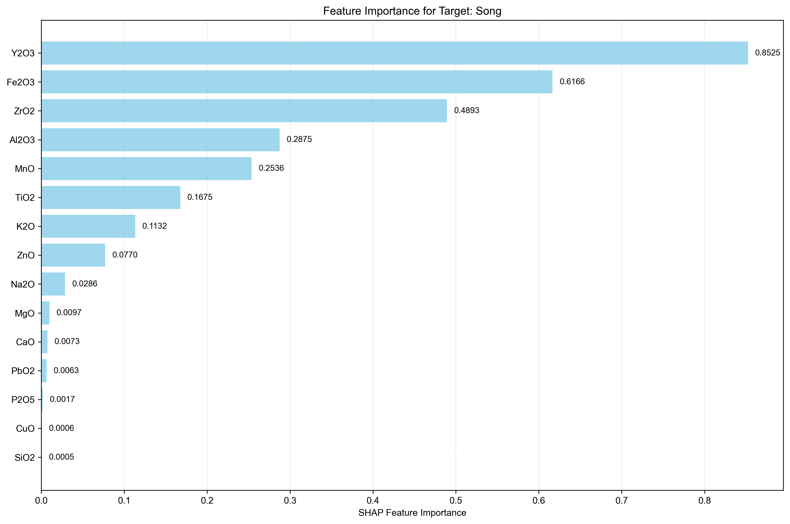
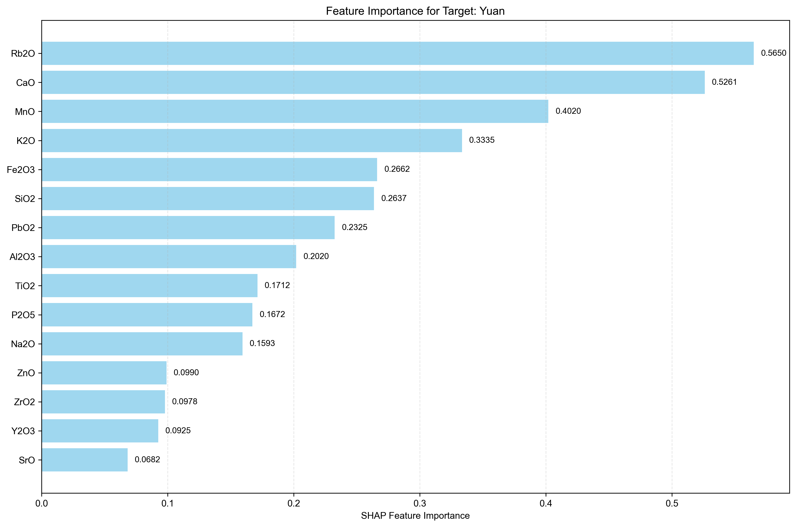

Analysis Method: SHAP
Number of Targets: 4
Generated on:
Targets Analyzed: Ming, Qing, Song, Yuan
| Rank | Feature Name | SHAP Importance | Relative Importance (%) |
|---|---|---|---|
| 1 | K2O | 1.9354 | 50.61% |
| 2 | SrO | 0.4769 | 12.47% |
| 3 | Fe2O3 | 0.3052 | 7.98% |
| 4 | Rb2O | 0.2495 | 6.52% |
| 5 | MnO | 0.2101 | 5.49% |
| 6 | TiO2 | 0.1278 | 3.34% |
| 7 | MgO | 0.1242 | 3.25% |
| 8 | P2O5 | 0.0979 | 2.56% |
| 9 | CaO | 0.0891 | 2.33% |
| 10 | Na2O | 0.0507 | 1.33% |
| 11 | Al2O3 | 0.0503 | 1.32% |
| 12 | SiO2 | 0.0452 | 1.18% |
| 13 | Y2O3 | 0.0223 | 0.58% |
| 14 | CuO | 0.0156 | 0.41% |
| 15 | As2O3 | 0.0090 | 0.24% |
| 16 | ZnO | 0.0067 | 0.18% |
| 17 | ZrO2 | 0.0059 | 0.15% |
| 18 | PbO2 | 0.0021 | 0.05% |

| Rank | Feature Name | SHAP Importance | Relative Importance (%) |
|---|---|---|---|
| 1 | MnO | 0.6655 | 24.69% |
| 2 | SiO2 | 0.6483 | 24.05% |
| 3 | MgO | 0.4000 | 14.84% |
| 4 | Al2O3 | 0.3939 | 14.61% |
| 5 | P2O5 | 0.3345 | 12.41% |
| 6 | Fe2O3 | 0.0517 | 1.92% |
| 7 | SrO | 0.0503 | 1.87% |
| 8 | Na2O | 0.0457 | 1.70% |
| 9 | Rb2O | 0.0390 | 1.45% |
| 10 | ZnO | 0.0206 | 0.76% |
| 11 | K2O | 0.0183 | 0.68% |
| 12 | CaO | 0.0107 | 0.40% |
| 13 | TiO2 | 0.0086 | 0.32% |
| 14 | ZrO2 | 0.0064 | 0.24% |
| 15 | Y2O3 | 0.0020 | 0.07% |
| 16 | CuO | 0.0004 | 0.01% |
| 17 | As2O3 | 0.0000 | 0.00% |
| 18 | PbO2 | 0.0000 | 0.00% |

| Rank | Feature Name | SHAP Importance | Relative Importance (%) |
|---|---|---|---|
| 1 | Y2O3 | 0.8525 | 29.27% |
| 2 | Fe2O3 | 0.6166 | 21.17% |
| 3 | ZrO2 | 0.4893 | 16.80% |
| 4 | Al2O3 | 0.2875 | 9.87% |
| 5 | MnO | 0.2536 | 8.71% |
| 6 | TiO2 | 0.1675 | 5.75% |
| 7 | K2O | 0.1132 | 3.89% |
| 8 | ZnO | 0.0770 | 2.64% |
| 9 | Na2O | 0.0286 | 0.98% |
| 10 | MgO | 0.0097 | 0.33% |
| 11 | CaO | 0.0073 | 0.25% |
| 12 | PbO2 | 0.0063 | 0.22% |
| 13 | P2O5 | 0.0017 | 0.06% |
| 14 | CuO | 0.0006 | 0.02% |
| 15 | SiO2 | 0.0005 | 0.02% |
| 16 | Rb2O | 0.0003 | 0.01% |
| 17 | As2O3 | 0.0000 | 0.00% |
| 18 | SrO | 0.0000 | 0.00% |

| Rank | Feature Name | SHAP Importance | Relative Importance (%) |
|---|---|---|---|
| 1 | Rb2O | 0.5650 | 15.08% |
| 2 | CaO | 0.5261 | 14.04% |
| 3 | MnO | 0.4020 | 10.73% |
| 4 | K2O | 0.3335 | 8.90% |
| 5 | Fe2O3 | 0.2662 | 7.10% |
| 6 | SiO2 | 0.2637 | 7.04% |
| 7 | PbO2 | 0.2325 | 6.20% |
| 8 | Al2O3 | 0.2020 | 5.39% |
| 9 | TiO2 | 0.1712 | 4.57% |
| 10 | P2O5 | 0.1672 | 4.46% |
| 11 | Na2O | 0.1593 | 4.25% |
| 12 | ZnO | 0.0990 | 2.64% |
| 13 | ZrO2 | 0.0978 | 2.61% |
| 14 | Y2O3 | 0.0925 | 2.47% |
| 15 | SrO | 0.0682 | 1.82% |
| 16 | As2O3 | 0.0389 | 1.04% |
| 17 | MgO | 0.0318 | 0.85% |
| 18 | CuO | 0.0304 | 0.81% |

• This report shows feature importance analysis for multi-target regression using SHAP method.
• Higher importance values indicate features that have more influence on the target prediction.
• Rankings are calculated independently for each target.
• Relative importance percentages show each feature's contribution relative to all features for that target.